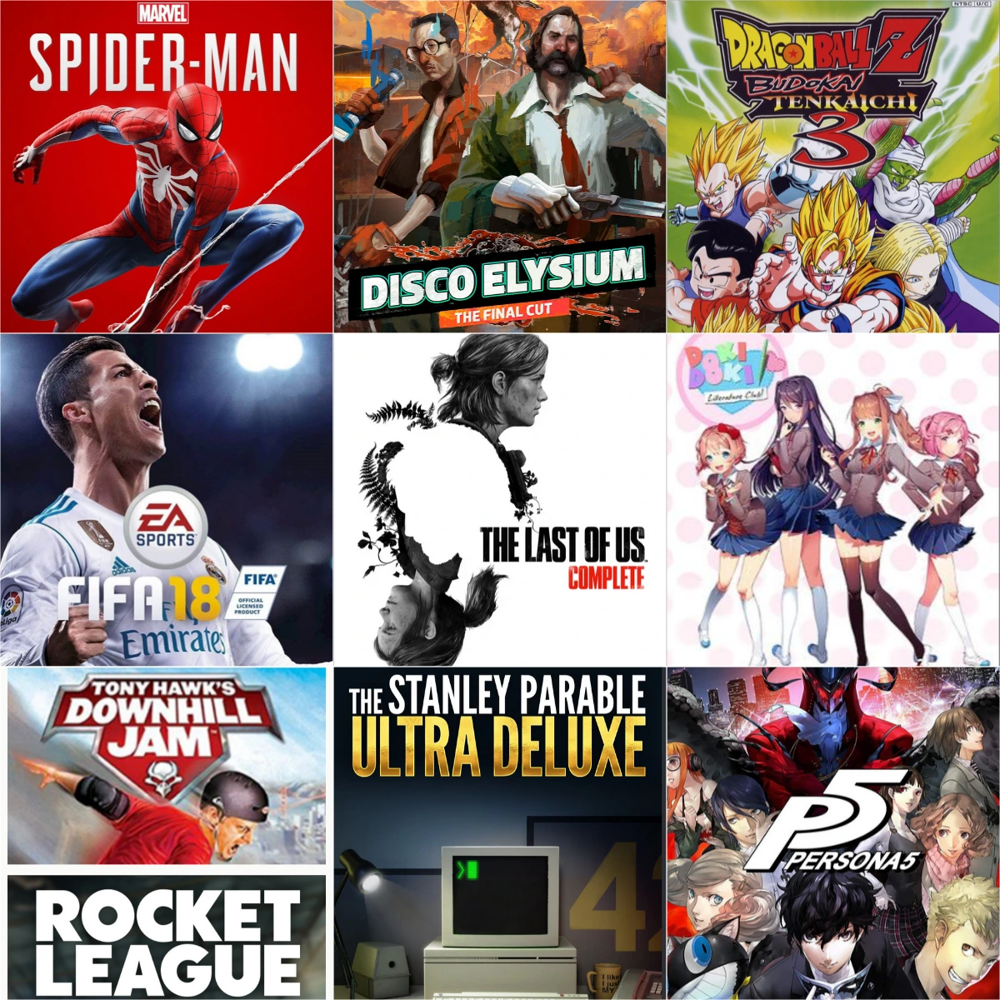

Given the theme of this website, it seemed fitting to base my first blog post on games - video games to be more particular. We had a PS2 console in our household in my early years and then WE had a PS4 later on - so I have had access to games for a long time. When I was thinking about how I should go writing about it, a 3 by 3 crossed my mind, why? thanks to all the time I spent listening to The Trash Taste podcast(Shout out to DA BOOYYYYYYS). I also thought of video games as some of these games have genuinely shaped a part of my life and changed my perspective on a lot of things. So here goes:

I was always fascinated why Persona 5 was so highly rated, it has perfect scores across all platforms, but from what I saw from the gameplay, it doesn't have the best graphics, it was a turn based game, so it wasn't like a fighter game where you are on the edge of the seat playing it, and even when I played it, the story was pretty meh, a lot of the it was text based and grindy. I genuinely did not get it.
But I still put 120 hours in it. Because the world that it build, is just so fun and stylistic and is like its own character. It genuinely was one of the reasons why I understood how art and how you portray a ( somewhat simple) theme (here, being rebel) can change how you experience a story. How they stylize everyday life, is something I genuinely try to implement in my life. Making mundane activities interesting is something this game has taught me. Like this game tries to make the UI/UX, the city map elements, the music so unique and interesting, I have also tried to implement that in this website, my projects and in my daily life activities and that has made everything more interesting and fun and I am thankful to this game for it.
Fifa has been a constant in my life since I was 5. I remember playing it in my mom's lab with bhaiya, playing PES 12-14 on PS2, deleting my brother's career mode by mistake. And finally buying fifa 18 for ps4 and now Fifa(FC(¬_¬)) 25 with da boys in my hostel. TWO fifa championships for me, ZERO for them, RESPECT MAAAAAN, RESPECT
Game so good it deserves its own page
I have never played this game(UPDATE: I have now played it! but again most endings I have only seen), but I watched every possible ending for this an unfilthy amount of times. Earlier I loved this because it was so meta (insert mind blown emoji for 16 year old me). But every time I watch it, new layers come out and it starts commenting on itself and at the end of the day the narrator's wit and charm is so fun, that I end up clicking on any new guy playing it on youtube. I played Portal 2 recently and its giving it a close competition, might get replaced honestly, I am having a lot of fun with Glaados my tsundere clanker queen.
UPDATE: I just completed Portal 2 lmao while writing this. WHAT A BANGER GAME. Fahhhh bro, I genuinely want to put it in the list. It is like stanley parable where the narrator is a tsundere queen (✧u✧) and has the best puzzles I have seen anywhere. She sings for me at the end as well bro. What a banger week it has been with this feet disease. I was hooked onto it. To cheat this list again, I will just leave you with the ending song playing if you click on me above. I need to complete Half life bro, Valve is too goated.
The game of my childhood and the game through which I experienced dragon ball originally even before watching it. This is unironically the most fun i have had while beating the shit out of characters. I had shit loads of fun playing this with my brothers and lots of fight as well because we started spaming moves and it would get annoying. It made the imaginations you have has a kid seeing goku, feel so real and cool, dragon ball is a very cool world with a lot of cool characters anyway, so this was like the best possible way to get introduced to it. I still see it sometimes(PLEASE WATCH DRAGON BALL ABRIDGED BRO, THAT IS THE FUNNIEST SHIT EVER) I want to buy Sparking Zero to experience this game to its full capabilities in modern consoles, but i can see nostalgia is a big part of me loving this so much so I don't know whether the experience can be recreated.
I am kinda cheating on this, naming 2 games, But I honestly couldn't chose between them as both served a similar purpose for me at different stages of my life - A very unique game with interesting mechanics that is so fun and rewarding to learn and play with DA BOYS. And I clowned on both games before actually falling in love with them. See when you are 7, you don't know who the hell Tony Hawk is and I was like ehhhh I don't want dis, give me spiderman (.·°՞(≧□≦)՞°·.). The store guy said to my bro "bhai bache to aese hi hote hain, nakhren maarte hain bahut, ek baar lejaake to dekho". That is why I know bullying and clowning on kids work cause I was a dum dum. My dumb ass had also thought that car football was a dumb idea. Here I am in my 20s playing it every other day shouting at the top of my lungs cause I scored a aerial. SO YEAHHHHHH, pick either, I just don't learn.
As you just read, This was THE game.The one I saw on youtube that made me go, please 🙏 papaaa, I neeeed thisssss, our ps2 kinda spidermanless, I wanna help it out. We essentially got the ps4 because i wanted to experience this. BRUH AND IT BEGINS WITH THE BEST OPENING IMAGINABLE, I still get goosebumps when I see that. You know I called 5 year old me a dum dum last game. This game proved he was onto something. The neuron activation you get while swinging is as true then as it is now. This game is a 10/10 even if it was just swinging around the city. It is the only game I have 100 percented. Also the best peter parker (brand new day now, cause of naruto/sadie sink bias but still).
Fahhhh, saying anything about this would spoil its experience. Well I can atleast say, making my friends play it and bhaiya soon, are top 2 experiences possible fr fr no cap. Also a game I didn't think I would relate to when I first played it, but here we are I guess(I am fine people, no need to contact me).
I started playing this game at a time I was looking for my intern, which also incites to looking for what I want to do. And as I was looking into that, I realised that most things I like/love to do have come from people I have liked/inspired me to do them and not the thing themselves per se. Like say, football came from my bhaiya, so did a lot of movies/games/anime, me wanting to make this site came from seeing cool websites made by games i love, me wanting to get into linux ricing came from a youtuber i liked. And I came across this game. In principal it has no mechanics except to make choices and it has as much text as you would put in a book. I have never willingly read so much text. But I was able to do that here, because every character here is so unique and fascinating and emulates that feeling I have in my life where I want to learn more about them/their world because they seem so interesting . This in all its essence is a book with great voice acting where they kept talking about how this world had shaped them. OHH and you yourself have 16 different personalities telling you to do different things. I haven't even talked about the plot of the game and how beautifully it portraits the journey of healing and how they have showed how different political views shape society. Genuinely tuff game
OKKKK, so I want to make one thing sure first. THIS IS NOT IN MY 3X3. I DO NOT ENDORSE THIS GAME. But I need to talk about it. Because I was also playing this doing the time I was searching for an intern and this in every sense is the anti-thesis to Disco Elysium. It is a game with is solely based on how cool the world is. And it is a very cool world. Disco Elysium in contrast is a town, where nothing fancy is happening. Here there is a white hole station, time loops, a planet with a black hole as a core which has hanging cities, a Quantum moon which introduces very cool features. But after playing for like 10-12 hours I lost interest in it, which seemed very weird and ironic, cause I am an astrophysics student, This shit is cool af, that is the reason I got into the field. But I soon lost the motivation to keep exploring it. It started to seem like a task that I had to put effort into rather than exploration. And that is why it is the anti thesis to Disco Elysium. I got through so much text in disco elysium even though that is something I would have quoted as being 'boring' earlier while exploring a sinking sand planet which sounds so cool seemed like a chore to do. I was baffled by it. This genuinely made me come to the realisation I came to earlier, that I love these things because of the people involved in it and not because they were cool. I experiences a similar thing in last of us(GO READ THAT BLOG). I am in Astrophysics because I found extremely cool people in krittika that I still love, I am getting into quizzing because I love the people there(even though I don't get the activity ache se still), I love football because of my bhaiya, and it sustained because of the extremely cool people I got to see playing it in Bruno, Ronaldo, Keane, Beliingham (I can keep on naming them). And this realisation has made me want to be this cool person, which my younger version would look at and be like, bruh that guy is so cool, what is his story? I wanna be like him. Its paradoxical but it still works. I just keep following the people younger me would say is so cool, cause bruh as you saw with the spider man shit, he was onto something. MAYYYBE listen to your close family and friends as well. MAAYYBEE. Ah I don't like the fact Outer wilds has such a long paragraph, but it did help me learn a lot about myself, so it deserves at least that. DON'T PLAY IT THOUGH. Younger me would hate me if someone plays this abomination because of me.
Some other games which were bangers but hit just a bit less than the ones mentioned above(EXCEPT OUTER WILDS)
1. Detroit: Become Human: how have their not been more games like this bro. It is genuinely one of one. No other game like this exists(although that is probably true for a lot of games here). Absolute Cinema
2. FireWatch: i played this in ROME of all places. Pretty ironic that the game is about escapism and I played it in the best tourist spot in the world. It did what disco elysium did but with 2 characters over a radio over a span of 5 hours. It was beautiful. The ending left a sour taste in my mouth though, It depended on, without spoiling it, backstory they told us for 5 minutes and as in the context of the story, that backstory spanned years and was worth more than the 5 hours i experienced in game but to me that 5 hours weighed more so it felt weird. Anyways, beautifully made and was a treat to experience.
3. Mouthwashing: I wanted to have a horror game in the 3 by 3 given how many I have experienced and this was original choice. They made the most indie looking game one of the most cinematic experiences I have had, so tuff.
4. Mole: Mouthwashing 2026. This took the mouthwashing concept and built on it with more scify and cool shit. But doki doki with the experiences I had playing with my friends just edges it.
5. Smackdown Here Comes the Pain : Another couch co-op classic with my friends, though I guess 2k is also making good games nowadays.
6. Neva : A beautiful indie game I enjoyed during the ending of my third semester. Me and Chinmay randomly found it and fell in love with it
7. Cuphead : Another game I play with my friends sometimes. The artstyle with the unique bosses make it special.
8. Horizon Zero Dawn : My memory of this game has been ruined by the bad story and forced storyline gimmicks in the second game. Also in hindsight, the dialouge was pretty jagged. Still stands as the most beautiful games I have ever played.Second game had great moments but the story lets it down.
9. Uncharted 4: It would have been in there if I hadn't played The Last of Us. Naughty Dog is genuinely goated.
10. Dispatch : Dispatch October, Wow its been a year. It is hard to call it a game cause it is essentially aa series. We essentially have 2 choices we need to make and they are also redundant to the plot. But it is so much fun. The weekly thing it did really put a light on how I should consume media. Because the weekly anticipation adds to how i consumed it so much and it made the 2 hour i played it every week that much more fun. I have become much more of a weekly watcher of things since then.
I am currently playing Half life 1(Black Mesa, the fan made edition), I also want to get into the alan wake games. I tried the Walking dead, did not like it. Its like dispatch but without it being fun and just an inferior version to the last of us(You can't help but compare given the similar themes). I want to finish Expedition 33 next whenever chinmay's laptop and me are free. Wow this turned out to be long. But I guess when you are writing about how things have affected your life, it turns out to be a long and complex process. Games are so fun man. I'll update this next year I hope. A lot of great games coming out but not for the ps4 anymore 🥀. Time to upgrade? I can't imagine myself getting an Xbox but that is the only good console on the market. Steam Machine is not really widely available. Less SEEE. Stay tuff.